<!DOCTYPE html>
<html lang="en">
<head>
<meta charset="UTF-8">
<meta name="viewport" content="width=device-width, initial-scale=1.0">
<title>Travel Map Test</title>

<!-- Leaflet CSS -->
<link rel="stylesheet" href="https://unpkg.com/leaflet/dist/leaflet.css" />

<style>
    html, body {
        height: 100%;
        margin: 0;
    }

    /* Full-screen map */
    #map {
        width: 100%;
        height: 100%;
    }

    /* Pop-up images */
    .popup-img {
        width: 180px;
        border-radius: 6px;
        margin-top: 6px;
    }

    /* Crisp triangle marker */
    .triangle-marker {
        width: 0;
        height: 0;
        border-left: 7px solid transparent;
        border-right: 7px solid transparent;
        border-bottom: 12px solid #00aaff; /* triangle color */
    }
</style>
</head>

<body>

<div id="map"></div>

<!-- Leaflet JS -->
<script src="https://unpkg.com/leaflet/dist/leaflet.js"></script>

<script>
    // Create the map
    var map = L.map('map').setView([20, 0], 2);

    // Add OpenStreetMap tiles
    L.tileLayer('https://{s}.tile.openstreetmap.org/{z}/{x}/{y}.png', {
        maxZoom: 18,
        attribution: '© OpenStreetMap'
    }).addTo(map);

    // Triangle icon definition
    const triangleIcon = L.divIcon({
        className: 'triangle-marker',
        iconSize: [14, 12],
        iconAnchor: [7, 12],   // tip of the triangle
        popupAnchor: [0, -12]
    });

    // -----------------------------
    // MARKERS
    // -----------------------------

    // Afghanistan
    L.marker([34.56924097766155, 69.21269647239585], { icon: diamondIcon }).addTo(map)
      .bindPopup(`<b>Afghanistan</b><br>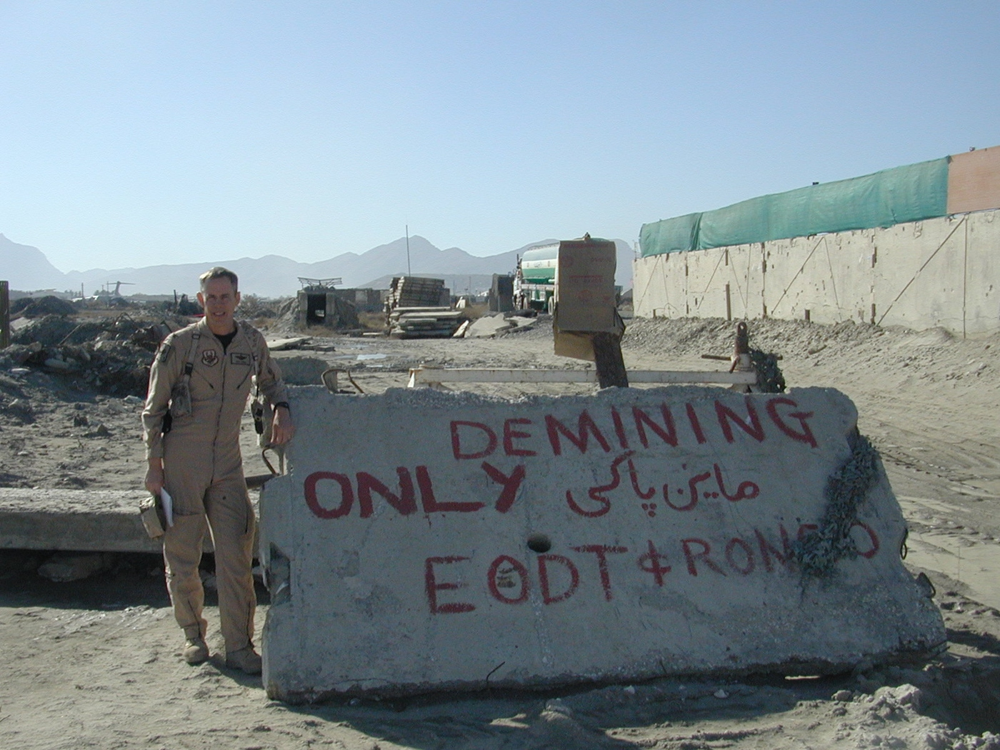<br>Kabul airport`);
    L.marker([36.687175152418114, 67.14808398937268], { icon: diamondIcon }).addTo(map)
      .bindPopup(`<b>Afghanistan</b><br>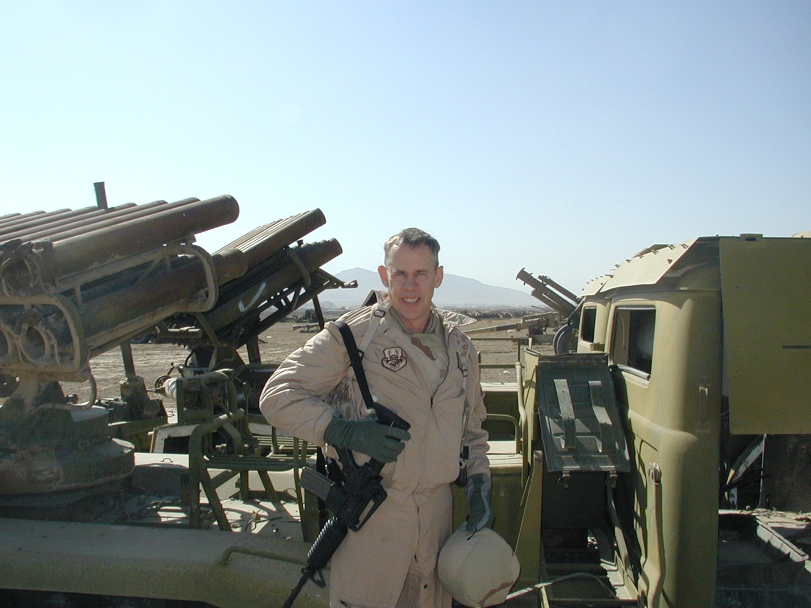<br>Masar-i-Sharif area`);
    L.marker([31.536520320085124, 65.89502725585834], { icon: diamondIcon }).addTo(map)
      .bindPopup(`<b>Afghanistan</b><br>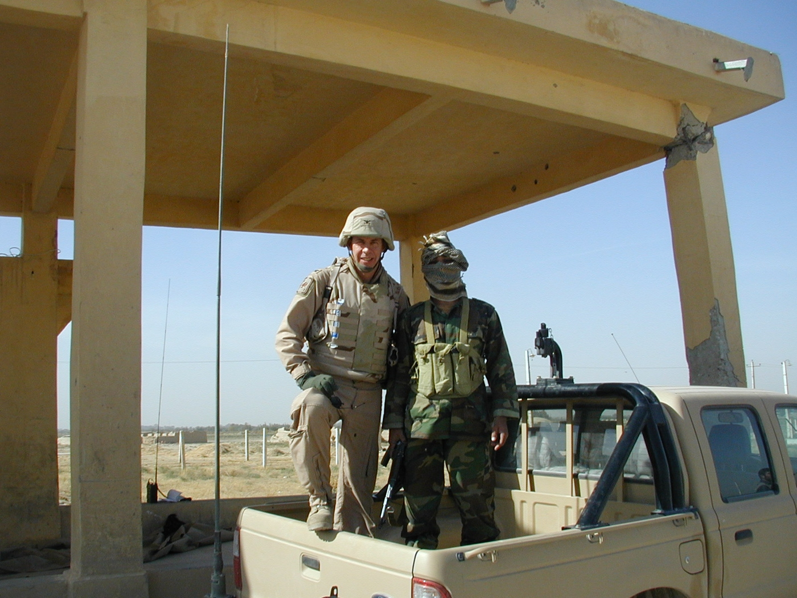<br>Kandahar area`);

    // Alaska
    L.marker([61.45447766239526, -149.36818757402776], { icon: diamondIcon }).addTo(map)
      .bindPopup(`<b>Alaska</b><br>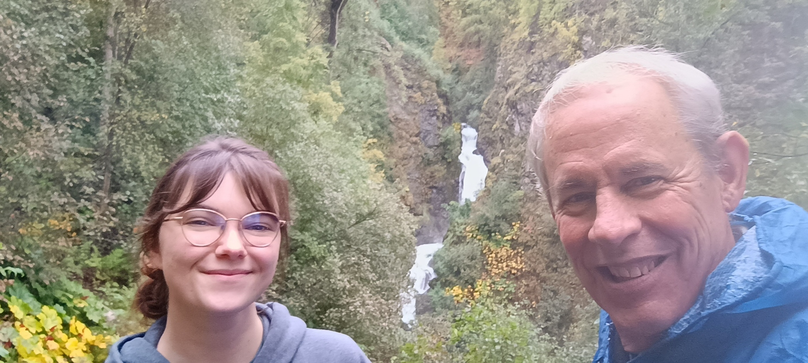<br>Anchorage area`);

    // Antarctica
    L.marker([-77.84238666818321, 166.6709738619791], { icon: diamondIcon }).addTo(map)
      .bindPopup(`<b>Antarctica</b><br>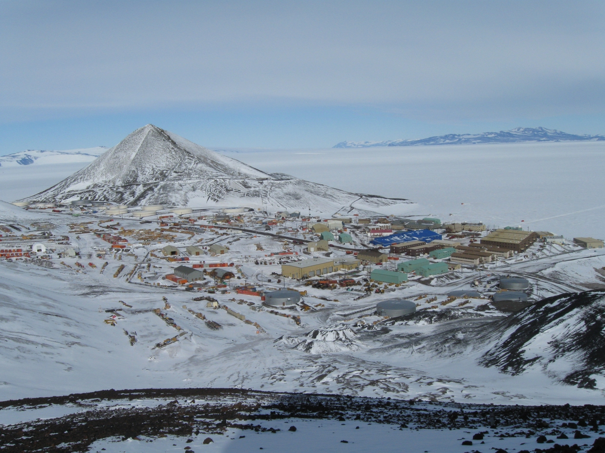<br>McMurdo`);
    L.marker([-77.84345474348973, 166.7814336681775], { icon: diamondIcon }).addTo(map)
      .bindPopup(`<b>Antarctica</b><br>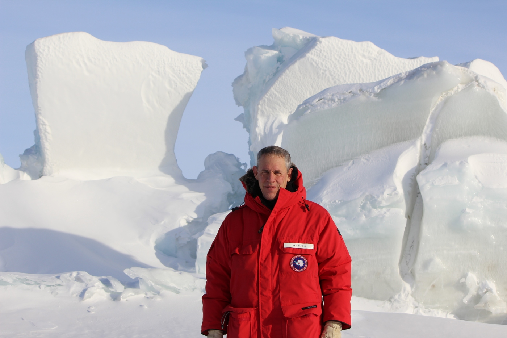<br>Ross Ice Shelf`);
    L.marker([-90, 0.0], { icon: diamondIcon }).addTo(map)
      .bindPopup(`<b>Antarctica</b><br>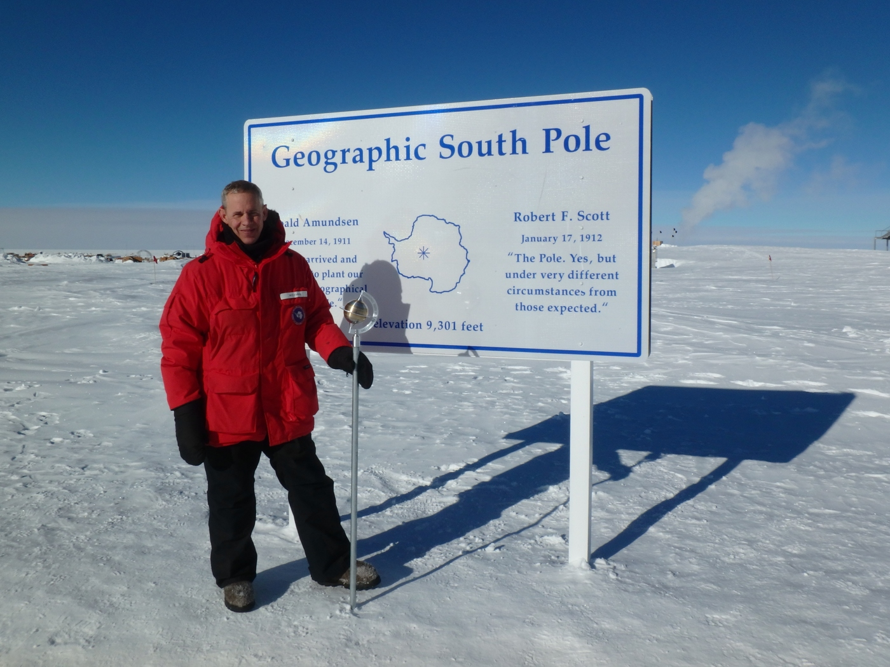<br>South Pole`);

    // Iceland
    L.marker([63.87929082426407, -22.445294501880408], { icon: diamondIcon }).addTo(map)
      .bindPopup(`<b>Iceland</b><br>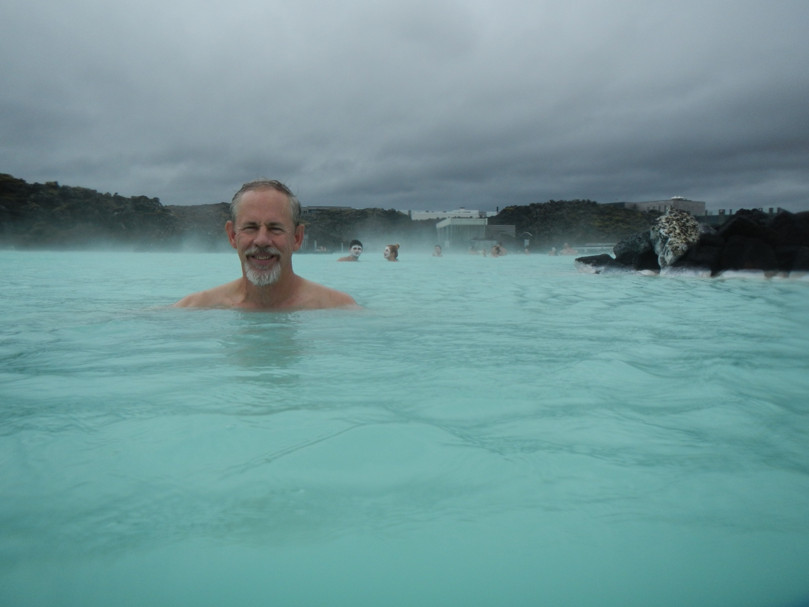<br>Blue Lagoon`);

    // Italy
    L.marker([41.889523300981125, 12.491522794092056], { icon: diamondIcon }).addTo(map)
      .bindPopup(`<b>Italy</b><br>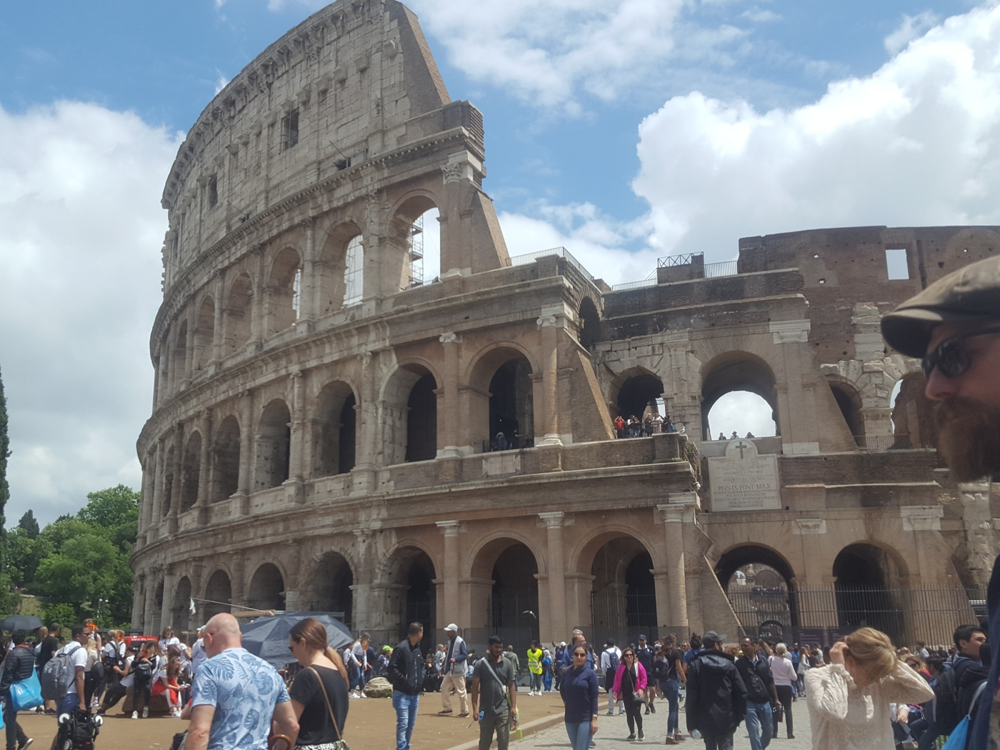<br>Rome`);    
    L.marker([43.722773637437534, 10.394783824061053], { icon: diamondIcon }).addTo(map)
      .bindPopup(`<b>Italy</b><br>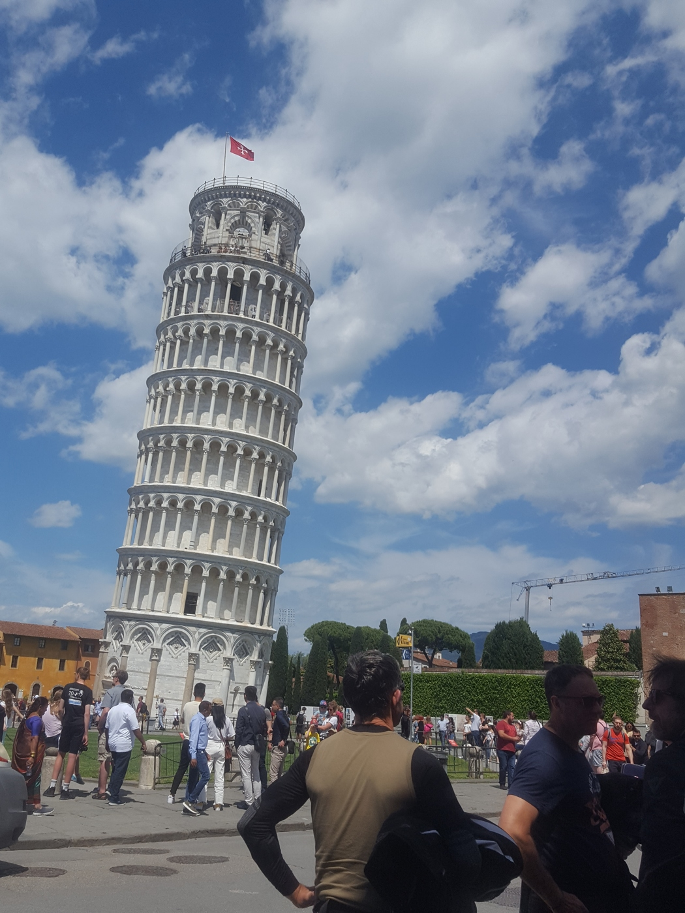<br>Pisa`);
    L.marker([40.74857261951603, 14.48413938233574], { icon: diamondIcon }).addTo(map)
      .bindPopup(`<b>Italy</b><br>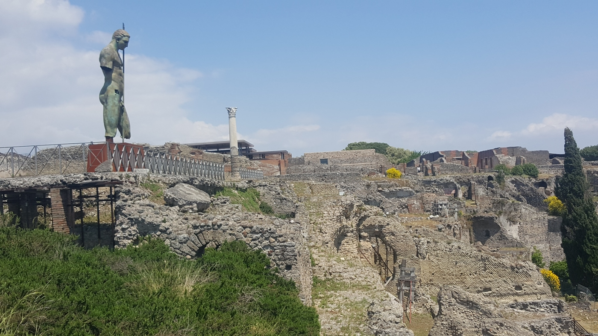<br>Pompei`);
    
    // Texas
    L.marker([29.505248067576897, -100.02638609576937], { icon: diamondIcon }).addTo(map)
      .bindPopup(`<b>Texas</b><br>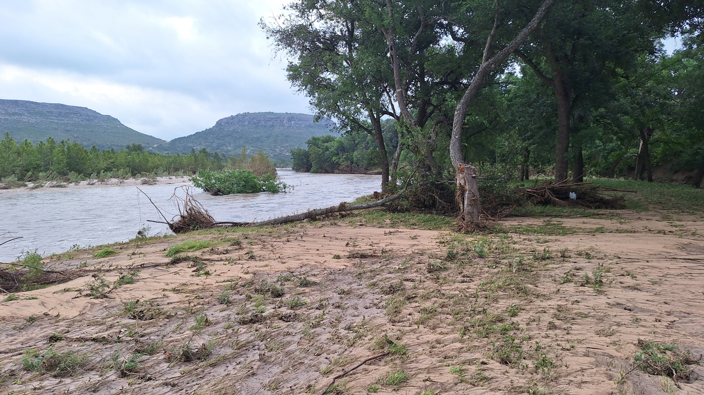<br>BrokeOak Ranch`);

</script>

</body>
</html>
